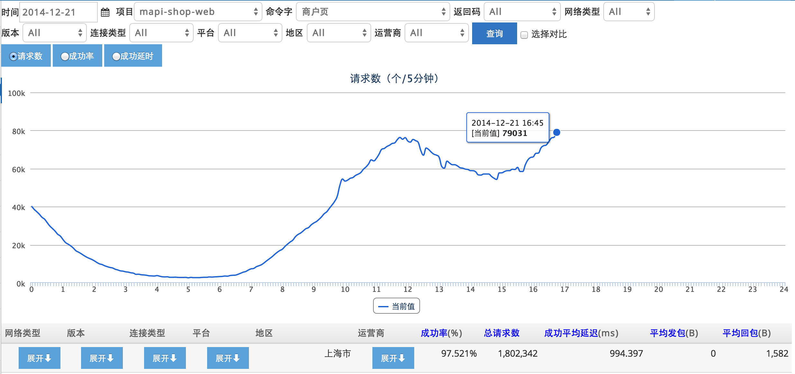
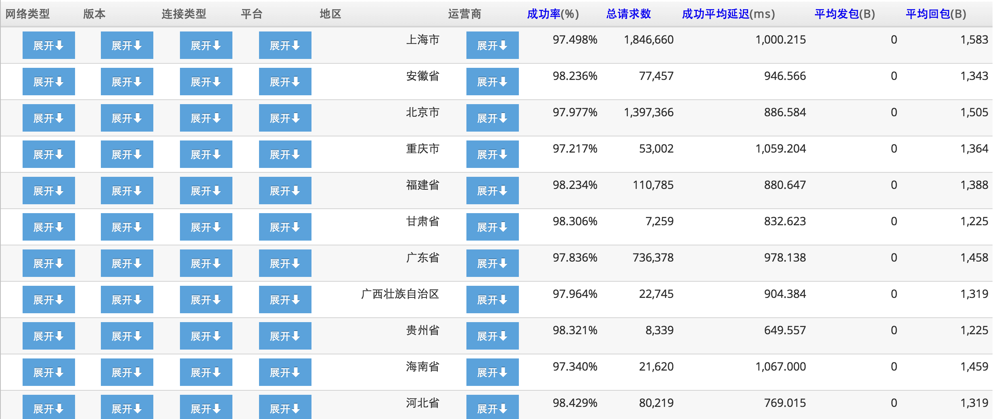
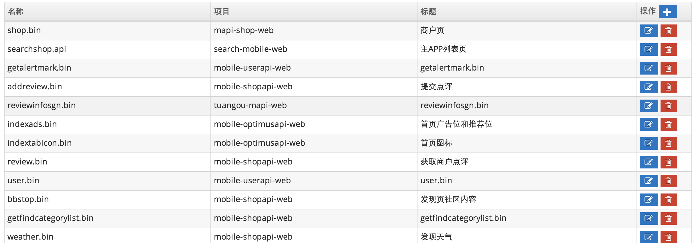
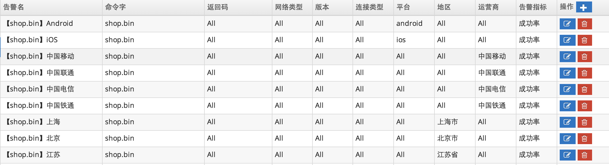
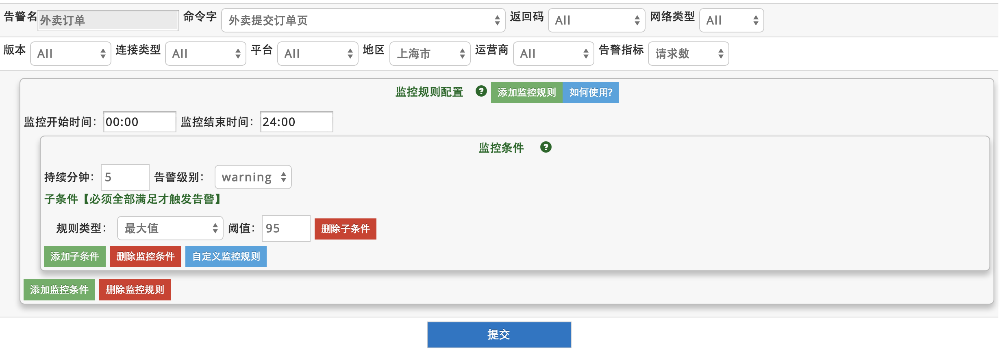

1、APP端到端使用说明 访问链接
监控点评APP的接口调用情况，这个是从用户手机APP采集的数据，从用户角度看点评接口的访问速度。
监控的分析的维度有返回码、网络类型、APP版本、平台、地区、运营商等。
Sample1：下图显示了shop.bin在不同平台的访问量的对比情况。
Sample2：下图显示可以按照不同维度展开的OLAP功能，下图按照运营商维度展开，看不同接口的访问情况。
2、APP端到端配置 访问链接
用户可以在该界面对Command命令字进行修改操作。
3、APP端到端告警 访问链接
A) 配置一览表
B) 配置告警规则
（1）告警名自定义，方便区分告警项。可对请求数、访问成功率、响应时间进行监控。
（2）多个监控规则构成了告警的主体，分别对不同时间段进行配置，以方便准确地进行告警。
（3）监控规则诠释着某个时间段内如何进行告警，由任意多个监控条件组成。任何一条监控条件触发都会引起监控规则触发，从而告警。
（4）监控条件诠释着什么条件会触发监控规则，由任意多个监控子条件组成。当所有子条件同时被触发时，才会触发该监控规则。
用户端监控文档
a).从用户端角度来看点评的业务接口状态，这是一个端到端的监控，能最早的发现用户端出现问题，比如根本访问不到点评，某城市延迟很大等。
b).用户端的监控目前能监控Ajax接口，页面Page不能监控到。
c).一般一个应用会监控1-2个重要接口，后端实时分析会按照城市、运营商维度做一些聚合分析。
外部监控API文档
用途：提供外部监控的Http接口，用于监控用户端的错误信息。
1、为了保留以后的扩展性，移动端和Web端的暂定用不同的API接口。
2、公网IP，114.80.165.63，文档后面{ip}使用这个
APP用户访问批量上报接口
http://{ip}/broker-service/api/batch
批量接口POST内容，前面加上“v=2&c=”(v=1已遗弃)，不同请求之间用回车ENTER分隔，字段之间用TAB分隔。
| 实际名称 | 描述 | 类型 |
|---|---|---|
| timestamp | 发送数据时的时间戳 | long |
| network | 2G,3G,4G,WIFI(iOS只有3G和WIFI)，1=wifi, 2=2G, 3=3G, 4=4G, 0=Unknown | int |
| version | versionCode,比如6.8=680,只支持int类型 | int |
| tunnel | 0 or 1，默认是0表示短连接，1表示是长连 | int |
| command | 接口，一般为url path的最后一个单位(shop.bin) | String |
| code | status code,建议区分http的返回码,比如>1000为业务错误码, <1000为网络错误码,<0为自定义错误码 | int |
| platform | android=1,ios=2,Unknown=0 | int |
| requestbyte | 发送字节数 | int |
| responsebyte | 返回字节数 | int |
| responsetime | 用时 (毫秒） | int |
| ip | 客户端连接的connection server的ip，长连接的代理ip | String |
单个请求格式如下
timstampTABnetworkTABversionTABtunnelTABcommandTABcodeTABplatformTABrequestbyteTABresponsebyteTABresponsetimeENTER
POST内容如果有如下5个请求，Sample的POST内容为，
v=2&c=不需要做urlencode，后面的批量的content部分需要urlencode。
v=2&p=1&c=
1400037748152\t1\t680\t1\tshop.bin\t200\t1\t100\t100\t200\n
1400037748163\t1\t680\t1\tshop.bin\t200\t2\t120\t110\t300\n
1400037748174\t1\t680\t1\tshop.bin\t200\t3\t110\t120\t200\n
1400037748185\t1\t680\t1\tshop.bin\t200\t1\t120\t130\t100\n
1400037748196\t1\t680\t1\tshop.bin\t500\t2\t110\t140\t200\n
v=3 在v=2的基础上，最后扩展了一个ip字段，表示当前连接的connection server的ip地址，暂时不做统计
单个请求格式如下
timstampTABnetworkTABversionTABtunnelTABcommandTABcodeTABplatformTABrequestbyteTABresponsebyteTABresponsetimeTABipENTER
POST内容如果有如下5个请求，Sample的POST内容为，
v=3&c=不需要做urlencode，后面的批量的content部分需要urlencode。
v=3&p=1&c=
1400037748152\t1\t680\t1\tshop.bin\t200\t1\t100\t100\t200\t10.1.6.128\n
1400037748163\t1\t680\t1\tshop.bin\t200\t2\t120\t110\t300\t10.1.6.128\n
1400037748174\t1\t680\t1\tshop.bin\t200\t3\t110\t120\t200\t10.1.6.128\n
1400037748185\t1\t680\t1\tshop.bin\t200\t1\t120\t130\t100\t10.1.6.128\n
1400037748196\t1\t680\t1\tshop.bin\t500\t2\t110\t140\t200\t10.1.6.128\n
APP加载速度批量上报接口
http://{ip}/broker-service/api/speed
批量接口POST内容，前面加上“v=1&c=”，不同请求之间用回车ENTER分隔，字段之间用TAB分隔。
| 实际名称 | 描述 | 类型 |
|---|---|---|
| timestamp | 发送数据时的时间戳 | long |
| network | 2G,3G,4G,WIFI (iOS只有3G和WIFI) | int |
| version | versionCode, eg. 6.8 = 680 | int |
| platform | android=1 or ios=2 | int |
| page | 加载页面，eg. index.bin | String |
| step1-responseTime1 | 页面加载第1阶段及延时，eg. 1-300 | String,responseTime单位为毫秒 |
| step2-responseTime2 | 页面加载第2阶段及延时，eg. 1-300 | String,responseTime单位为毫秒 |
| ....... | 页面加载阶段及延时，eg. 1-300 | String,responseTime单位为毫秒 |
| stepN-responseTimeN | 页面加载第N阶段及延时，eg. 1-300 | String,responseTime单位为毫秒 |
单个请求格式如下:
timstampTABnetworkTABversionTABplatformTABpageTABstep1-responseTime1TABstep2-responseTime2TABstep3-responseTime3ENTER
POST内容如果有如下5个请求，Sample的POST内容为
v=1&c=
1400037748152\t1\t680\t1\tpage1\t1-20\t2-30\t3-40\t4-50\n
1400037748163\t1\t680\t1\tpage2\t1-20\t2-30\t3-40\t4-50\n
1400037748174\t1\t680\t1\tpgae3\t1-20\t2-30\t3-40\t4-50\n
1400037748185\t1\t680\t1\tpage4\t1-20\t2-30\t3-40\t4-50\n
1400037748196\t1\t680\t1\tpage5\t1-20\t2-30\t3-40\t4-50\n
APP Crash日志上报接口
http://{ip}/broker-service/api/crash
参数可以post上来，需要对value进行encode。
| 参数名 | 描述 | 类型 |
|---|---|---|
| v | 版本号，默认为1 | String |
| an | appname | String |
| p | 手机类型，andriod传入1，ios传入2 | int |
| av | app版本 | String |
| pv | 手机系统版本 | String |
| m | 模块名 | String |
| l | 错误等级，如ERROR, WARNING | String |
| msg | crash的简单原因，后续统计根据msg进行分类，比如NullPointException | String |
| db | 手机品牌 | String |
| dm | 手机型号 | String |
| id | dpid | String |
| t | crash时间戳 | long |
| mi | 混淆map id | String |
| d | 详细的错误日志 | String |
原有crash日志兼容接口：
| 参数名 | 描述 | 类型 |
|---|---|---|
| v | 版本号，兼容之前的接口,v=2 | String |
| an | appname | String |
| mi | 混淆map id | String |
| d | 详细的错误日志 | String |
mobile-log-web中的crash日志接口：
http://stat.api.dianping.com/utm.js?v=${appname}&mi=${mapid}
| 参数名 | 描述 | 类型 |
|---|---|---|
| v | appname,每个app有一个特定的名称 | String |
| mi | 混淆map id | String |
将错误的详细信息放在post的内容中。
APP Crash日志混淆map上传接口
http://{ip}/broker-service/api/crash?op=upload
参数可以post上来，需要对value进行encode。
| 参数名 | 描述 | 类型 |
|---|---|---|
| mi | 混淆map ID | String |
| f | 混淆map内容 | String |
APP Crash日志统计获取接口
http:/...dianpingoa.com../r/app?op=appCrashLogJson
其他所有参数的设置可以在页面点击查询后自动拼接生成，将op参数设置为appCrashLogJson就可以获取网页上的各个统计信息的JSON数据
APP 长连访问批量上报接口
http://{ip}/broker-service/api/connection
批量接口POST内容，前面加上“v=3&c=”，不同请求之间用回车ENTER分隔，字段之间用TAB分隔。
| 实际名称 | 描述 | 类型 |
|---|---|---|
| timestamp | 发送数据时的时间戳 | long |
| network | 2G,3G,4G,WIFI(iOS只有3G和WIFI)，1=wifi, 2=2G, 3=3G, 4=4G, 0=Unknown | int |
| version | versionCode,比如6.8=680,只支持int类型 | int |
| tunnel | 固定为1，表示是长连 | int |
| command | 接口，一般为url path的最后一个单位(shop.bin) | String |
| code | status code,建议区分http的返回码,比如>1000为业务错误码, <1000为网络错误码,<0为自定义错误码 | int |
| platform | android=1,ios=2,Unknown=0 | int |
| requestbyte | 发送字节数 | int |
| responsebyte | 返回字节数 | int |
| responsetime | 用时 (毫秒） | int |
单个请求格式如下
timstampTABnetworkTABversionTABtunnelTABcommandTABcodeTABplatformTABrequestbyteTABresponsebyteTABresponsetimeENTER
新版本加入了接入点IP
POST内容如果有如下5个请求，Sample的POST内容为，
v=2&c=不需要做urlencode，后面的批量的content部分需要urlencode。
v=3&c=
1400037748152\t1\t680\t1\tshop.bin\t200\t1\t100\t100\t200\n
1400037748163\t1\t680\t1\tshop.bin\t200\t2\t120\t110\t300\n
1400037748174\t1\t680\t1\tshop.bin\t200\t3\t110\t120\t200\n
1400037748185\t1\t680\t1\tshop.bin\t200\t1\t120\t130\t100\n
1400037748196\t1\t680\t1\tshop.bin\t500\t2\t110\t140\t200\n
APP监控报表获取接口
Cat支持其它系统通过调用HTTP API来获取APP监控报表数据（JSON格式）
http请求方式: GET或者POST
http://主机域名:端口../r/app?
参数说明
| 参数 | 说明 |
|---|---|
| op | linechartJson[查看API访问趋势、运营活动趋势]、piechartJson[查看访问量分布] 必需 |
| 其他参数 | 参考端到端APP监控文档，除了op参数不同，其他均相同，可直接复用 必需 |
url示例（红色部分为不同参数，没有op则需要添加，其他参数相同）
http:/...dianpingoa.com../r/app?op=view&query1=2014-10-28;1;;;;;;;;;&query2=&type=request&groupByField=&sort=&domains=default&commandId=1&domains2=default&commandId2=1 为APP监控查看的URL链接
则获取报表的URL为：
http:/...dianpingoa.com../r/app?op=linechartJson&query1=2014-10-28;1;;;;;;;;;&query2=&type=request&groupByField=&sort=&domains=default&commandId=1&domains2=default&commandId2=1
APP命令字添加/删除API
Cat支持其它系统通过调用HTTP API来添加、删除APP命令字
http请求方式: GET或者POST http://主机域名:端口../r/app?
参数说明
| 参数 | 说明 |
|---|---|
| op | 执行操作 必需[增加Command:appAdd 删除Command:appDelete] |
| name | 命令字名称 必需 |
| domain | 所属项目 可选 |
| title | 命令字标题 可选[建议添加，便于查看] |
url示例（get方式）
http:/...dianpingoa.com../r/app?op=appAdd&domain=testDomain&name=testName&title=testTitle http:/...dianpingoa.com../r/app?op=appDelete&domain=testDomain&name=testName&title=testTitle
返回说明
{"status":200} ——> 成功 {"status":500} ——> 失败 {"status":500, "info":"name is required."} ——> 失败 [缺少name参数]
APP监控配置查询API
Cat支持通过curl等方式获取APP监控配置（XML或JSON）
http请求方式: GET或POST http://主机域名:端口../r/app?
参数说明
| 参数 | 说明 |
|---|---|
| op | 执行操作 必需[为appConfigFetch] |
| type | 配置格式 可选[默认为JSON] |
url示例（get方式）
http:/...dianpingoa.com../r/app?op=appConfigFetch&type=json http:/...dianpingoa.com../r/app?op=appConfigFetch&type=xml
返回说明
配置文件数据 ——> 成功 空或其他错误 ——> 失败
注意，在浏览器中查看XML格式数据会显示为空，应该在代码中进行数据的读取。例如：
curl -d "type=xml" http:/...dianpingoa.com../r/app?op=appConfigFetch